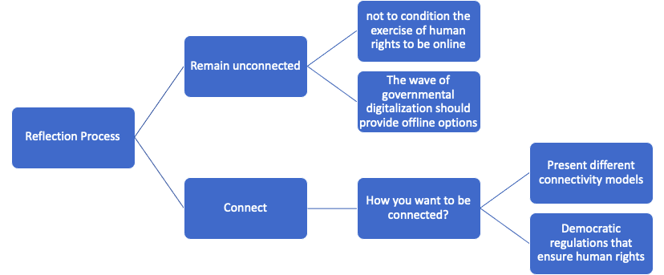

Keeping it Analog: A framework for opting out of connectivity
by Karla Prudencio and Peter Bloom
Introduction
We’ve been hearing about the digital divide for decades—its urgency as an issue ebbs and flows, but in the context of the ongoing Covid-19 pandemic, conversation about equitable access to digital communications has once again taken center stage as a pressing matter. While connectivity has been immensely important for those who have been able to reap its fruits, during these challenging times we are forced to confront the reality that access to the digital world is out of reach for a considerable part of the population of the planet. Coupled with this urgency is a necessary recognition around the undeniable, emerging paradox: Internet connectivity likewise facilitates the violation of fundamental human rights and undermines cultural self-determination.
With that in mind, the following text seeks to do three things:
– Reflect upon and confront the increasingly glaring contradictions of the work connectivity advocates (to whose ranks we belong) do around advocating for connectivity policies and even building networks in otherwise unserved places. Connecting new places has always entailed some moral hazard, but this has increased over the years and feels now to be at some kind of tipping point as digital communication technologies become ever more central, monolithic and problematic.
– Engage the Digital Rights community—the people who organize and campaign around things like the right to connectivity and the Internet as well as rights and freedoms online—on the topic of connectivity. For the most part, this community has not recognized that since digital technologies occupy such hegemonic importance, even people who do not use or do not wish to must inevitably engage with, resist, and appropriate them. As such, even those who do not use digital technologies every day should be included in Digital Rights strategies, but new ones that still must be developed. This piece aims to help broach and frame this discussion and provide concrete recommendations of how to be more inclusive.
– Rethink internet governance frameworks, and human rights frameworks more generally, to be more inclusive of the complex, intersectional issues regarding connectivity access. The multi-stakeholder approach does not do a good job of including voices on this topic because it has been concerned with, on the one hand, solving the connectivity problem and, on the other, reacting to the issues of the people that are already online. Prevention of human rights violations and the transformation of connectivity schemes to address those harms are generally absent from internet governance conversations and should be included.
The digital divide and the Covid-19 crisis
Both people and institutions have looked to connectivity, mainly access to the Internet, as an important option to maintain some semblance of normality while conforming to social distancing requirements. Even now, with the pandemic beyond its initial stage and some countries reducing lock-down measures, it seems that much of the online migration that has happened during the pandemic is here to stay, meaning access to the Internet and digital services will continue to play an essential part in everyday life. In some cases, this role has become so entrenched and normalized that we forget about those who are unable to participate and how being left out is felt more deeply than ever. Just take the recent situation in India where connected, digitally-savvy young people were able to get vaccinated while older, less well connected elderly people, who had a much greater need, could not get appointments.
According to official statistics, a tad under half of the world population is not connected to the Internet. In Latin America, according to the most recent statistics, close to 30% of the population is not online. Different variables contribute to the problem of the digital divide, but these can be generally parsed into four categories: no coverage or services available; access is too expensive; a lack of digital skills; or, the Internet simply does not offer anything of interest. While the number of people connected does go up every year, the rate of expansion is fairly modest at about 2 or 3% annually, and at the current rate (which is actually slowing) it will take decades to get everyone online who wishes to be.
Recognizing that the digital divide cannot be closed with current approaches has led to numerous and varied proposals. Traditional telecommunications companies have been pushed to do more for rural and disconnected areas, especially during the pandemic. To name just a couple of examples (out of dozens), Deutsche Telekom in Germany gave an additional 10GB per month to all customers and, in South Africa, Telkom agreed to cut wholesale broadband prices to ISPs. In the US, the Federal Communications Commission (FCC), has extended its Keep America Connected initiative, which instructs telcos to not disconnect any customers from services due to nonpayment of bills, until the end of June 2021. While the temporary, mandated benevolence of traditional telecommunications companies was helpful for many, it is certainly not a long term strategy for increasing access equity.
Prior to the pandemic, Big Tech companies such as Amazon, Facebook and Google, had already begun to enter the connectivity space, in many cases encouraged by States, yet with few regulations. Even civil society and international organizations have been financing and re-adapting their projects to address the issue of affordable access. Everyone seems to agree, and are increasingly vocal, that something should be done and should be done quickly to get everyone connected.
Connectivity: From means to end
Where these different approaches to connect all of humanity become questionable is in how they have been built upon an entrenched heuristic: connectivity is always preferable to disconnection, and the means of achieving connectivity does not matter as long as the goal of access is reached. In other words, connectivity is perceived as an end unto itself rather than a facilitator of other, more important things.
To begin to unpack this logic, we must examine how, why and by whom it is being articulated. What does it mean for private companies, States and civil society all to share and participate in the construction of a unified, linear development narrative around connectivity? Connect the Unconnected, Connecting the Next Billion, Internet for All, and the Hyperconnected World, are just a few of the examples of this common discourse. Yet we rarely question these terms nor the values and agendas they rather obliquely represent. As the pandemic has forced many of us to accept a significantly higher level of governmental and corporate control in both physical and digital spaces, which in some cases borders on authoritarianism, now is a good time to take a step back and reflect on the digital future we seem to be hurtling toward and why.
This may seem ironic coming from people who directly work on connectivity projects, including ones with titles such as “Connecting the Unconnected”, but it is through this work that we have gained some understanding, if not wisdom, about the potential downsides of what we do and how we talk about what we do. In order to justify our work, engage partners and raise money to support community network initiatives around the world, we have developed more nuanced ways to talk about ‘networks’ (usually a proxy for Internet access) and how they enable fundamental rights such as communication and access to information and also facilitate other social, economic and human rights. In this narrative, connectivity, particularly to the Internet, is about being able to participate more fully in society and the economy.
While the above is true, it is equally true that the Internet has fully entered a much more ambiguous and problematic phase, driving inequality and, among other things, eroding privacy. The initial hope that the decentralized architecture of the Internet would result in equally decentralized governance and equity is clearly a utopia. The reality today is that a few companies own both the upper (i.e. content, applications) and lower layers (i.e. physical infrastructure) of the Internet, resulting in an unprecedented centralization of power and control. And it is also true that governments around the world conveniently use digital communications networks to illegally monitor the activities of everyday people.
What’s in a name?
“Connect the unconnected”, to take just one example, is a frequently heard phrase in development dialogues. If we break this common phrase down, we can begin to understand some of the troubling dynamics at play. The first big issue is categorizing people by their status as being connected or not, with the unsaid implication that being unconnected is less-than. Professor of Communication Studies, Ulises Ali Mejías, critiques the concept of “digital divide” and argues that “the assumption behind the discourse of the digital divide is that one side, technologically advanced and accomplished, must help the other side, technologically underdeveloped or retarded, to catch up.”
The very classification “unconnected” also tells us quite a bit. There are scant examples of such a broad lumping together of so many people in reference to a service or product. Perhaps the only other term of classification that is similar is “unbanked”. There are quite a few parallels between unconnected and unbanked in the sense that both categories are created to define people unable to access a service or good that, at its heart, is about bringing people into the circuits of capitalist accumulation—whether financial or surveillance.
When we talk about the “unconnected” we are referring to nearly half of the world’s population, over 3 billion people, encompassing immensely varied geographies, cultures and day-to-day realities. Among these billions of people, are there many who want to be better connected? Absolutely. Do they constitute a homogeneous group or class? Not really. The ‘connectivity for all’ discourse fails to recognize which characteristics (besides being disconnected) these communities actually share.
The framing is reductionist for refusing to ask after the cultural and political identities, lived realities and dreams and aspirations of the people it purports to want to redeem. It is also instrumentalist as the condition of being unconnected only exists insofar as there is some third party who creates the category as a way to organize their own thoughts and actions. If you asked someone who does not have Internet access to define who they are, “unconnected” almost certainly would not be mentioned. So if the “unconnected” are not a properly determined group, how can they accept or assent to having connectivity done to them?
Out of these troubling oversights the connectivity discourse, whether inadvertently or not, implies that “the unconnected” are acultural and ahistorical and have just one necessity: being saved from themselves through technology. Furthermore, the ‘connectivity for all’ narrative invisiblizes structural injustices as well as cultural and political diversity. The idea that there is a class of people called the “disconnected” whose challenging conditions and less-than status can be alleviated with a one-size-fits-all solution developed by those more enlightened is a symptom of the structural violence edified over centuries of colonialism and, more recently, neoliberal capitalism.
As such, it fails to address the root causes for why people find themselves on the “wrong” side of the digital divide by ignoring the structural inequalities that lead them to being unable to exercise their rights to communication and access information in the digital age: uneven development, poverty and cultural discrimination. By taking this willfully ignorant approach, those who want to connect the “next billion” show a lack of concern for how identities and territories could be threatened instead of helped and reinforce the notion that solutions to community problems are better if they come from the outside, diluting the agency of social actors.
The Internet vs. everything
Further complicating the issue is how the generic term connectivity has become synonymous with Internet access. This is increasingly problematic as the Internet itself becomes a vehicle for the promotion and expansion of surveillance capitalism, consumerism, addictive behavior, and so on. Most people want to communicate across boundaries and receive and share information, but the Faustian bargain at the heart of the modern Internet seems like an increasingly dubious thing to cajole other people into. We need to be very aware of the risk of pushing vulnerable populations or historically oppressed groups into extractive and unequal digital relations under the guise of narrowing the digital divide. One thing is clear, we will not create digital or real world equity if our departure point is lumping everyone together into one category and paving over the diversity of the real world while positing one truth and one solution: connectivity.
Problematically, this narrative often ends up informing public policies that reinforce technological solutionism approaches to diverse areas of public life and critical services. Even before the pandemic, universal connectivity arguments had been articulated as public policies and laws in countries around the world. To name a couple examples, in 2016 the UN General Assembly passed a non-binding Resolution that “declared internet access a human right. And in 2020, Argentina declared the Internet as a public service.
One concerning example of how this thinking has permeated into the upper layers of the global agenda during the Covid-19 crisis is the ITU initiative Connect2Recover which aims to reinforce beneficiary countries’ digital infrastructure and ecosystems. One of its main objectives is to strengthen means of utilizing digital technologies such as telework, e-commerce, remote learning, and telemedicine to support “recovery efforts and preparedness for the ‘new normal.'” In this pro-Internet echo chamber, alternative voices cannot help define what society should prioritize post-pandemic.
Beyond States and governments, social media is now a strategic way for politicians and political parties to communicate for official purposes (announcing new laws, communicating policies, etc.). Some federal courts in the U.S. have even recognized the importance of these social media accounts as a “modern public square,” arguing that it would violate the First Amendment for these officials to block followers based on their viewpoints. This perspective has also been upheld in other countries, like Mexico, where the Supreme Court reaffirmed that public servants using social networks may not block users who issue critical comments, unless their “behavior constitutes abuse or a crime”. While these resolutions are considered victories for civil society, they have the (perhaps) unintended consequence of legitimizing the provision of official information through commercial platforms, ignoring people that are not online or do not want to be.
Whether local or global, the above examples feed into notions that the Internet is now an essential, public service and therefore public policies must be enacted to ensure people can access it. Following this logic, if someone is denied access to the Internet they are therefore also denied full citizenship and participation in civic life. On one hand we can laud States for enshrining a new right or set of basic public services, but on the other hand we should question if this is actually a good thing. Even Vint Cerf, one of the “fathers of the Internet” proposes caution in a 2012 op-ed in the New York Times: “improving the Internet is just one means, albeit an important one, by which to improve the human condition. It must be done with an appreciation for the civil and human rights that deserve protection—without pretending that access itself is such a right.”
Traditional human rights such as education and healthcare are now often mediated by connectivity technologies, which are, in turn, seen as nearly equally important. This is very rarely questioned as being problematic but represents a real distraction by simultaneously masking decades of neoliberal hollowing-out of public services while attempting to resolve deeply entrenched and complex structural problems with an Internet band-aid. In other words, this logic misunderstands the root of the problem and proposes an incomplete, potentially harmful solution.
Underconnected or Overconnected?
As the access frontier slowly expands, in the foreseeable future many people and communities will no longer be digitally excluded. Yet, these are the populations most likely to have their digital rights violated as new schemes for connecting rural and poor populations tend to ignore data protections and local customs and preferences in favor of just getting people connected. In many cases it goes beyond insensitivity to these issues, perceiving them as major obstacles in the eyes of the connector.
It is slow and expensive to engage each and every population and tailor connectivity to local needs. It is also harder to make money from poor people, as many people without digital access tend to be. As such, new methods of accumulation have been devised in order to attempt to make the venture profitable. This is how we arrive at the “platformization” of some connectivity schemes, with Big Tech introducing “lesser-than” products and services into newly connected territories through business models primarily based on the extraction and commercialization of personal data.
A prominent example of this is Facebook’s Free Basics initiative, a partnership between Facebook and various mobile operators to offer access to “essential” online services without data charges. This is problematic because Facebook has been promoting their product as allowing “people to experience the relevance and benefits of being online for free” while in reality, they are limiting choices, accessing and selling behavioral data of these consumers, and further positioning their brands and services.
We can extrapolate further threats to newly connected people by looking at the negative consequences of being overly exposed and consumed by the digital world in places that are already connected. For example, in some well connected places, the automation of jobs has significant implications for labor rights. Manufacturing jobs that robots replace “come from parts of the workforce without many other good employment options.” And at the individual level, ubiquitous access to digital technology and connectivity is making adolescents more depressed and suicidal as compared to previous generations.
Online interactions are rife with privacy and surveillance risks as well as fraud, deception, and fake news. The centralization of power has given a few companies overwhelming control over how people access information, whose voices are valid, and for what purposes. For example, Google’s proprietary algorithms determine the outcomes of most of the world’s search queries, curating access to information and ultimately shaping perceptions of truth for billions of people.
Furthermore, places that are already connected have tended to introduce surveillance technologies that hurt the exercise of human rights, especially for already vulnerable racial and ethnic minorities. These technologies, to date poorly regulated, often embody biases in gender and race, which has implications for how people can behave in their own cities and territories.
A new rights framing
While so many are pushing to increase connectivity, its negative aspects should give us pause and motivate us to create more equitable and respectful ways for bringing people online, coupled with an accompanying rights framework for those that do not want to be connected. This is not just about someone saying “I chose not to connect” and living with the consequences, but rather a set of processes and collective approaches to define how people and territories want to be involved, or not, in connectivity and mechanisms for those choices to be respected and enforced.
Our proposal is to shift the perspective of how government institutions, companies and civil society approach “unconnected” communities and how connectivity policies and practices are shaped. Instead of starting from the assumption that the right that “disconnected” people have is to be connected, we should pursue a more appropriate starting point, one that we must build and nurture, namely: policies and procedures that facilitate reflection on the use and introduction of new technologies. The final goal of this reflection is for specific communities in specific places to make informed decisions—to shape their own digital destinies or decide to keep it analog.
From the standpoint of the people promoting connectivity, it is crucial to understand who wants to connect and why, what benefits and risks they see, and how the community believes that these processes could change their relationships and the territory they inhabit. The first step is certainly prior and informed consent (collective and individual) and undertaking something similar to an environmental impact assessment. In this framing, connectivity projects must be based on doing the hard and slow work of understanding the needs and aspirations of communities before they get to the connecting part. And in some cases there won’t be a connecting part because local people decide to stay as they are or go in another direction.
In order to facilitate this process, communities require clear information about the risks as well as potential benefits of connectivity. If this process of facilitation is done by those outside the community, it should ensure there is a diagnosis to understand who the target community is and the pertinent issues they face before engaging with the community. This diagnosis or “connectivity impact assessment” should evaluate likely intersectional impacts, beneficial or adverse, by examining socio-economic, cultural and health issues at the community and individual levels. Our colleagues have developed methodology to do just this in the Let us rethink communication technologies methodological guide.
After this process or consultation and risk assessment, communities have three options to consider:
1) choose to remain unconnected
2) choose to connect and define how
3) choose to connect but individuals opt out
These options should be understood as a subset of rights that have their own particularities, and that entail specific actions that the State, civil society and industry should undertake. These three options are encompassed by well-established human rights, that include (but are not limited to):
- The right to freedom of thought (art.18, Universal Declaration of Human Rights).
- The right to freedom of opinion and expression (art.19).
- The right to take part in the government of one’s country (art.21).
- To a standard of living adequate for the health and well-being of oneself and one’s family (art.25)
Remain unconnected:
The legally protected rights or interests of those who want to stay unconnected are the right to freedom of thought, opinion and expression, and the right to define one’s own standards of how they want to live according to their ideas of health and well-being. As we explained before, within the group of communities broadly defined within the unsatisfactory category of “unconnected” some share characteristics, values, and principles. These characteristics are the ones that define them as a community; for example, inhabiting a specific territory, speaking a common language, having a particular relationship with nature, specific decision-making processes and worldviews. After undertaking the impact assessment, communities can freely decide if connectivity models serve the principles and values that are the basis of their life as a community or if being connected represents a hazard for their way of living.
If connectivity represents a threat to the point that the dangers trump the benefits, communities are free to choose to remain unconnected. This right is collective because it serves a group as a whole (the community that is deciding). The final intention of the consultation and impact assessment is as a reflection process to give a community the opportunity to protect the principles and values that they recognize as fundamental to their existence and development. We must acknowledge that exercising freedom of thought and expression and balancing the risks and benefits of connectivity, is the most suitable way to make this decision, as the community itself will know best how to adequately protect their health and well-being.
We realize that to accept the right to remain unconnected, it is necessary to challenge long-established international and national legal traditions that put forth access to the Internet as an enabler of human rights and have enshrined universality of connectivity. However, as stated before, it is time to recognize the negative aspects of connectivity and how those could and do manifest in specific places and populations. Under this scenario, it would not be permissible to force a community to “pay the costs of being connected” against their will, so we must find other ways to enable fundamental human rights such as freedom of expression, access to information, or communication.
Connect:
It is also possible that a community collectively decides to connect because they analyze that the benefits outweigh the risks. In this scenario, the second question should be: how should this connectivity be undertaken? To answer this question, communities should have another round of reflections to review the different available connectivity models. This could mean anything from working with a commercial provider to building their own community network.
According to the United Nations High Commissioner for Human Rights, under a rights-based perspective, States should ensure that the deployment and development of information technologies (ICTs), including data-driven technologies, are regulated by international human rights law. This obligation should include, in addition to ensuring connectivity projects adhere to the law, that States create enabling regulatory environments for innovative and diverse connectivity models.
Examining these models is an essential part of the process for those who chose to connect because each model has its benefits and risks. As we explained before, some models can undermine how we live online (for example, extracting more data than necessary). In contrast, others could help to make the Internet a better place to exercise human rights (e.g. community networks). The final decision of the model should take into account the principles that each community understands as fundamental for them, for example, privacy, data protection, or plurality, etc.
Connectivity should also be accompanied by an adequate framework and methodology to help communities confront online threats. This implies that it is not enough to connect a place but that capabilities around preventing the dangers and better exercising human rights should be built in parallel.
Opt-out:
It is further necessary to acknowledge the individual’s right to remain outside connectivity. This right can be exercised when the community decides collectively to enter the digital world, yet the individual has another perspective about the dangers this could pose for their health and life, or just simply are not interested. The right to opt-out from connectivity is built upon the right to free development of personality (UDHR art. 22 & 29), which encompasses the general right to self-determination.
This right does not have the same characteristics as the right to remain unconnected because it does not protect a collective or a group. However, it could be fundamental to protect individuals that decided to stay outside some circuits of digital accumulation as a matter of protecting their dignity and free development. No one should be pushed into a situation that could threaten their physical and mental health. Individuals who decide to opt out should not be discriminated against for resisting connectivity and therefore should not face undue barriers when exercising other fundamental rights such as access to education or healthcare.
Conclusion
The previous section outlined the characteristics of the rights pertinent to communities and people while deciding if and how to connect. These are in no way exhaustive and the hope is that they can provide a minimum baseline from which to rethink how connectivity happens (or doesn’t) and lead to conversations and dialogue that can eventually shape policies that are more respectful of people, places and preferences.
Following this conclusion is a set of specific actions that different stakeholders might follow. Both the framing in the above section and the recommendations that follow should be taken as a point of departure for a more nuanced debate around possibilities for confronting the digital divide and the myriad ethical and practical issues that come with doing so under a new, more inclusive, paradigm.
For so many reasons, we need to change the way we talk about the problem of access to networks as only by doing so will we be able to build an alternative narrative that prioritizes human communication and agency rather than Internet access, and which does not assume that all people want to be connected to the Internet. Coupled with a new narrative must be a solidly grounded, rights-based framework that can lead to better public policies.
RECOMMENDATIONS
State:
a. Building a process for decision-making. It is important to remember that the telecommunications industry and Big Tech neglect rural and economically marginalized localities, as well as racial and ethnic minorities, as they do not represent sufficiently attractive markets for their products. This supposed market failure leads the State to assume the responsibility for providing alternatives to connect these people and places. This can entail providing the service directly, or by subsidizing companies, or promoting lightweight regulations for some companies to operate in targeted regions of priority.
Under this state of affairs, the State should take a step back and develop mechanisms to facilitate reflection among unconnected citizens based on accurate and relevant information. In order to do that they need to:
Provide precise information to unconnected communities as part of a consultation process and that will help them build a local connectivity impact assessment. This needs to include information about infrastructure, environmental impact, potential risks, and potential benefits of being online.
2. Facilitate, when communities require, the process of reflection inside the communities. Also, it is essential to promote the interchange of perspectives and knowledge between different groups. The state, due to its position, can be a good articulator among other actors within the process.
b. If communities do not want to connect. The State is the primary responsibility holder in terms of respecting communities’ decision on the matter. However, this does not imply they sit idly by when a community decides to forego connectivity. It is crucial not to condition the exercise of human rights to being connected to the Internet. As we stated earlier, some countries have been relying on connectivity to the Internet as a gateway to access human rights, such as online education. If States are willing to respect the rights that communities have to remain unconnected, they need to provide some options to access these rights outside technological circuits. This is not only applicable to the exercise of human rights but should also be extended to bureaucratic and administrative procedures.
c. If people want to be connected. The State also needs to be prepared to support people who want to be connected. We recognize that a vast literature on connecting underserved areas exists; however, we find it important to highlight some points:
1. States need to present all connectivity models, giving communities the option to choose the models that help them to exercise their human rights and pursue their collective goals most adequately.
2. States must impose stricter regulations to prevent companies from offering services that violate principles such as net neutrality and that impose worse data or privacy regimes on those who cannot pay.

Civil society:
Must recognize that connectivity is not always preferable to disconnection, and therefore should focus their attention on listening to the goals and needs of the “disconnected”. This implies, at least, the following actions:
a. Include diverse voices in agendas to imagine a different Internet not dominated by Big Tech and telcos. This implies connectivity options that forego the Internet altogether in favor of other types of communication, e.g. voice.
b. Digital rights groups sometimes ignore the relationship between specific connectivity models and the exercise of human rights. For example, “access to the Internet” is usually seen as another digital right, such as privacy or data protection. However, connectivity models such as community networks could be more suitable for protecting digital rights online than models that promise to connect people by exploiting their data. Community networks allow for reflecting on which principles our online lives should embody, both individually and collectively, and including them in the technology and administration of networks before and while people are being connected.
Industry/Private sector:
The private sector also has a role to play within this framework. First, they need to respect communities that want to remain unconnected by complying with their decisions. However, they also should undertake the following actions:
a. Avoid providing marginalized people and places with connectivity services that are sub-par or that offer fewer options.
b. Comply with net neutrality and other regulations destined to ensure that everyone will have equal treatment regarding their access to the Internet.
c. Build and offer “privacy by design” products and do not profit from people’s data on a “take it or leave it” basis. These communities should have the same options as people that are already connected.